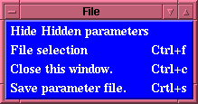
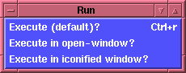
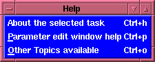

Parameter Editing Window Menubuttons
Parameter Editing Window Menubuttons

- The File menubutton allows the user to:
- "Hide the Hidden parameters" if
they are presently being displayed in the Parameter Editing
Window,
- "Show the Hidden parameters" if they are not
being displayed in the Parameter Editing Window.
- "File selection"
allows the user to call up a "File selection" window
which shows all of the files in the present
directory.
- When the user uses this option
any files selected are NOT associated with any
particular entry box! However the use can "select and
copy" a file name using the left mouse button, and
"insert" that into a particular entry box using the
middle mouse button.
- When the user wishes to have the "file selection"
associated with a particular entry box, this is done
by:
- Selecting the entry box within the
Parameter Editing
Window using the left mouse button, or the
"tab" key which moves between them.
- Use the right-most-mouse-button to call the
"File selection"
window.
- Use the "OK" button within the window. This
will return the selected file to the entry box
selected.

- The Run menubutton allows the user to:
- "Execute" the task as per the default setting (i.e.,
Do NOT iconify task_window) which
was set in the Options
menu in the flaunch window.
- "Execute in an open-window",
i.e., the window which
is spawned will not be iconified so that the user can
see all output from the task being run. [This is useful
if the user is running a task which requires interactive
input, e.g., fplot, or one that based upon the
user's desire can be made interactive based upon the
command-line created, e.g., fdump.]
- "Execute in an iconified window", i.e., the window
which is spawned will be iconified and all output from
the task can be viewed via the
Output button in the
flaunch window which shows the
Executed Tasks window.

- The Help menubutton allows the user to:
- The About the selected task option will display
any Extended Help
available on the task which is being displayed in the
Parameter Editing Window.
- The Parameter edit window help displays the
on-line help which is available to describe the features
of the
Parameter Editing
Window.
- The Other Topics available option displays a
list of all topics which are
available for viewing via the on-line help. [This
is also accessible via the Control-o keyboard binding.]
INDEX
Brian K. Elza
Last modified: Mon Jul 28 14:49:01 EDT